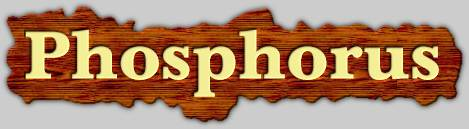

A Knowledge and Experience-Based Agent Capabilities Matcher
|
|
 A Knowledge and Experience-Based Agent Capabilities Matcher |
| PHOSPHORUS is a knowledge-based matcher that accepts a user's description of a needed service as input and responds with a ranked list of agents that have the capability to provide that service. The Phosphorus matcher will exploit subsumption, goal reformulation, and partial match. The matcher will also be experienced-based, using learning techniques to improve the utility of its matches over time | |
| Yolanda Gil, Hans Chalupsky. | |
| Soon! | |
| Matching requests and agent capabilities through Ontologies | |
| DARPA Control of Agent-Based Systems (CoABS) program | |
| The EXPECT Group homepage. | |
| The PHOSPHORUS project started June 1999 and is ongoing. |